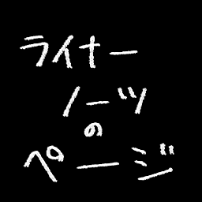
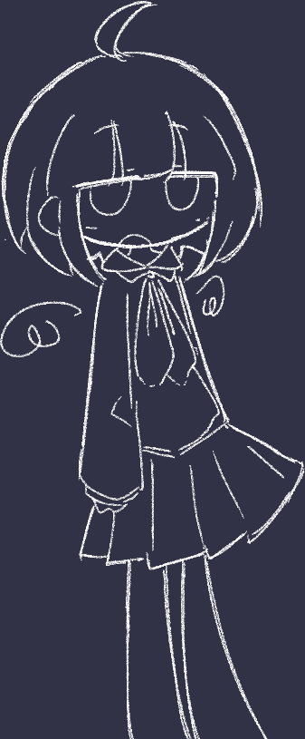
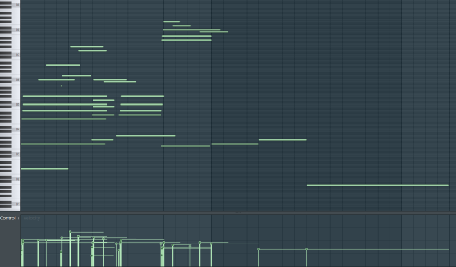

Tr.01 saaa - maybe cloudy
制作期間：2025/11/26 ～ 2026/01/29 BPM:141
星空をテーマにした曲というお題で書いた楽曲なのですが、
曇り空にしてしまいました（なんでそんなことを…………）
【ジャケットの子について】
地上の生態調査をしている天界の隊の下っ端（自称）天使。
元々の姿は不定形で不可視。擬態、吸収をすることで人の目に見える状態になる。
訳あって調査任務からバックレて地上でひっそり暮らしている。
晴天だと天界から自分の姿が観測されてしまうため、
空が雲で遮られている曇天が好き。

アウトロがすごく気に入っている！！！（2:09～）

（アウトロのピアノmidi）
スカスカのmidi、今まで恐ろしくていつもモリモリmidiにしちゃっていたのですが、
今回うまくハマったことにより、味を占めている途中です
この曲作って以降、静かな感じで終わる曲が増えている……